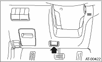

1. READ DIAGNOSTIC TROUBLE CODE (DTC)
1. Prepare the Subaru Select Monitor kit.
2. Connect the diagnosis cable to the Subaru Select Monitor.
3. Insert the cartridge to the Subaru Select Monitor. 
4. Connect the Subaru Select Monitor to the data link connector.
(1) Data link connector is located in the lower portion of instrument panel (on the driver’s side).

(2) Connect the diagnosis cable to the data link connector.
NOTE:
Do not connect scan tools except for Subaru Select Monitor.
5. Turn the ignition switch to ON (engine OFF) and Subaru Select Monitor switch to ON.
|
(A) |
Power switch |
6. On the «Main Menu» display screen, select the {Each System Check} and press the [YES] key.
7. On the «System Selection Menu» display screen, select the {Transmission} and press the [YES] key.
8. Press the [YES] key after the information of transmission type is displayed.
9. On the «Transmission Diagnosis» screen, select {DTC Display}, and then press the [YES] key.
NOTE:
• For details concerning operation procedures, refer to the “SUBARU SELECT MONITOR OPERATION MANUAL”.
• For details concerning the diagnostic trouble codes (DTC), refer to the List of DTC.
1. On the «Main Menu» display screen, select the {Each System Check} and press the [YES] key.
2. On the «System Selection Menu» display screen, select the {Transmission} and press the [YES] key.
3. Press the [YES] key after the information of transmission type is displayed.
4. On the «Transmission Diagnosis» display screen, select the {Current Data Display & Save} and press the [YES] key.
5. On the «Transmission Diagnosis» display screen, select the {Data Display} and press the [YES] key.
6. Using the scroll key, scroll the display screen up or down until the desired data is shown.
• A list of the support data is shown in the following table.
|
Contents |
Display |
Unit of measure |
|
Battery voltage |
Battery Voltage |
V |
|
Rear vehicle speed sensor signal |
Rear Wheel Speed |
km/h or MPH |
|
Front vehicle speed sensor signal |
Front Wheel Speed |
km/h or MPH |
|
Engine speed signal |
Engine Speed |
rpm |
|
Automatic transmission fluid temperature signal |
ATF Temp. |
°C or °F |
|
Gear position |
Gear Position |
— |
|
Line pressure control duty ratio |
Line Pressure Duty Ratio |
% |
|
Lock up clutch control duty ratio |
Lock Up Duty Ratio |
% |
|
Transfer clutch control duty ratio |
Transfer Duty Ratio |
% |
|
Torque converter turbine speed signal |
Turbine Revolution Speed |
rpm |
|
2-4 brake timing pressure control duty ratio |
Brake Clutch Duty Ratio |
% |
|
Low clutch duty ratio |
L/C Duty |
% |
|
High clutch duty ratio |
H/C Duty |
% |
|
Low & reverse brake duty ratio |
L&R/B Duty |
% |
|
Acceleration opening angle |
Accel. Opening Angle |
% |
|
Cruise control |
Cruise Control Signal |
ON or OFF |
|
ATF temperature light |
ATF Temperature Light |
ON or OFF |
|
Stop light switch signal |
Stop Light SW |
ON or OFF |
|
Parking range signal |
P Range Signal |
ON or OFF |
|
Neutral range signal |
N Range Signal |
ON or OFF |
|
Reverse range signal |
R Range Signal |
ON or OFF |
|
Drive range signal |
D Range Signal |
ON or OFF |
|
3rd range signal |
3rd Range Signal |
ON or OFF |
|
2nd range signal |
2nd Range Signal |
ON or OFF |
|
1st range signal |
1st Range Signal |
ON or OFF |
|
Automatic transmission diagnosis indicator light |
Diagnosis Light |
ON or OFF |
|
Power switch signal |
POWER Switch |
ON or OFF |
|
Hold switch signal |
HOLD Switch |
ON or OFF |
|
FWD switch signal |
FWD SW |
ON or OFF |
|
Shift lock solenoid signal |
Shift Lock Solenoid |
ON or OFF |
|
Sport shift mode switch |
Tiptronic Mode Switch |
ON or OFF |
|
Shift up switch |
Up SW |
ON or OFF |
|
Shift down switch |
Down SW |
ON or OFF |
NOTE:
For details concerning operation procedures, refer to the “SUBARU SELECT MONITOR OPERATION MANUAL”.
1. On the «Main Menu» display screen, select the {Each System Check} and press the [YES] key.
2. On the «System Selection Menu» display screen, select the {Transmission} and press the [YES] key.
3. Press the [YES] key after the information of transmission type is displayed.
4. On the «Transmission Diagnosis» display screen, select the {Clear Memory} and press the [YES] key.
5. When “Done” is shown on the display screen, turn the Subaru Select Monitor and ignition switch to OFF.
NOTE:
• For details concerning operation procedures, refer to the “SUBARU SELECT MONITOR OPERATION MANUAL”.
• If {Clear Memory 2} is selected and performed, DTC and learned control memory are cleared. If Clear Memory 2 is performed, execute the advance operation of learning control.
4. FACILITATION OF LEARNING CONTROL
NOTE:
When the following services have been performed, or when the shifting shock is occurred during the total check with vehicle driving, perform the learning with following procedures.
• Replacement of TCM
• Replacement of transmission
• Replacement of clutches
• Replacement of control valve body
• When Clear Memory 2 is performed.
1. Shift the select lever to “P” range, and apply the parking brake.
2. Lift the vehicle.
3. Connect the Subaru Select Monitor to the data link connector, and then turn the ignition switch to ON.
4. Perform {Clear Memory 2} using the Subaru Select Monitor.
5. Using the Subaru Select Monitor, check that there is no DTC displayed.
6. Warm-up the engine until the ATF temperature displayed on the Subaru Select Monitor reaches 60 — 90°C (140 — 194°F).
7. Shift the select lever to “R” range.
8. Turn all switches including headlight, air conditioner, seat heater, rear defogger and etc. OFF.
9. Wait for 30 seconds or more with the ignition key turned to OFF and accessory OFF.
10. When “Communication Failed!” is displayed on Subaru Select Monitor, press the brake pedal fully until the learning control promotion is completed.
11. Turn the ignition switch to ON (engine OFF) and Subaru Select Monitor switch to ON.
12. On the «Main Menu» display screen, select the {Each System Check} and press the [YES] key.
13. On the «System Selection Menu» display screen, select the {Transmission} and press the [YES] key.
14. Press the [YES] key after the information of transmission type is displayed.
15. Shift the select lever to “P” range, and then wait for 3 seconds or more.
16. Shift the select lever to “R” range, and then wait for 3 seconds or more.
17. Shift the select lever to “N” range, and then wait for 3 seconds or more.
18. Shift the select lever to “D” range, and then wait for 3 seconds or more.
19. Shift the select lever to “N” range, and then wait for 3 seconds or more.
20. Slowly depress the accelerator pedal to full open.
21. Slowly release the accelerator pedal to full close.
22. Start the engine, and idle it.
23. Shift the select lever to “D” range.
24. Start learning control promotion. At this time, the power indicator light in the combination meter will start blinking at 2 Hz. When the power indicator light does not blink, Turn the ignition switch to OFF and repeat the procedures from step 4). When the power indicator light which blinking at 2 Hz changes to blink at 0.5 Hz, facilitation of learning control is completed.
NOTE:
When blinking of power indicator light changes from 2 Hz to 4 Hz during learning control promotion, repeat the procedure from step 4).
25. Shift the select lever to “N” range, and then turn the ignition switch to OFF.
26. Shift the select lever to “P” range to complete the learning control promotion.